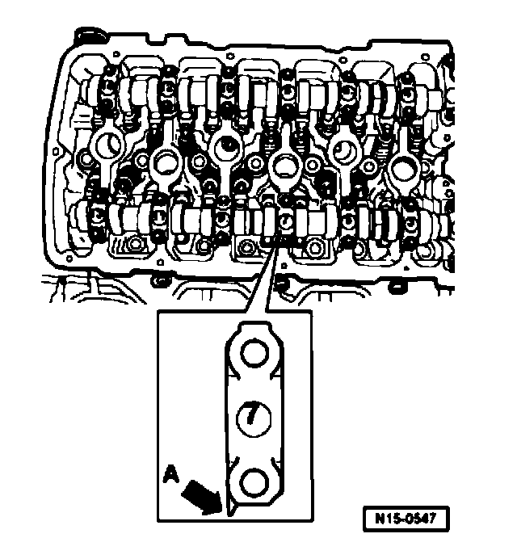

Intake Camshaft Bearing Caps Installation Sequence

^ Observe installed position of bearing caps.-
^ Points of bearing caps - arrow A - of intake and exhaust camshaft face outward.
^ Identification on bearing caps is legible when read from intake side.

A - Intake camshaft
- Tighten bearing caps 5 and 9 alternately and diagonally to 5 Nm and 1/8 turn (45 ) further.
- Install bearing caps 1 and 13 and tighten to 5 Nm and 1/8 turn (45°) further.
- Install bearing cap 7 and tighten to 5 Nm and 1/8 turn (45°) further.
- Install bearing caps 3 and 11 and tighten to 5 Nm and 1/8 turn (45°) further.